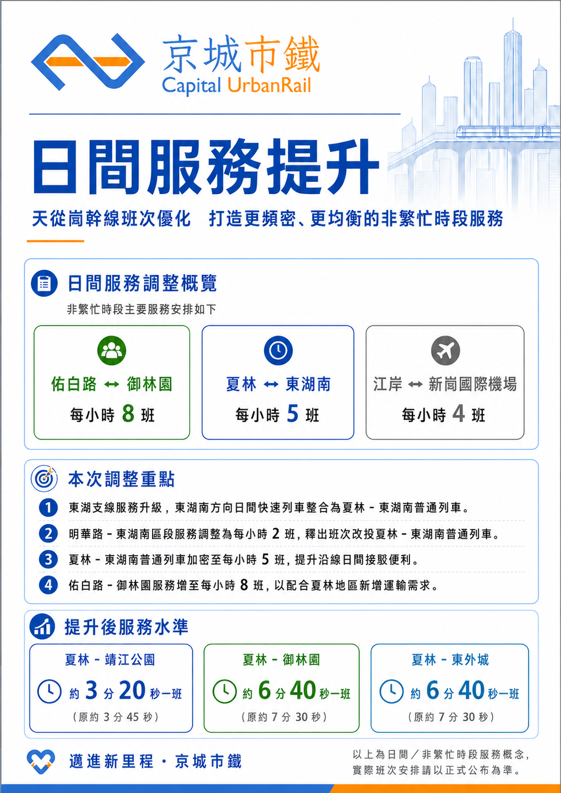

SERVICE NOTICE
日間服務提升：天從崗幹線班次優化及東湖支線服務調整

主文
為配合夏林地區人口增長及沿線旅運需求變化，京城市鐵將優化天從崗幹線及東湖支線的日間列車服務，重新整合現有班次資源，提升非繁忙時段的服務密度與班次均衡度。
服務調整後，東湖南方向的日間快速列車將整合為夏林－東湖南普通列車；明華路－東湖南區間列車調整為每小時 2 班，相關運能將改投夏林－東湖南服務，使該區間普通列車增至每小時 5 班，為夏林及東湖支線沿線乘客提供更直接、穩定的接駁服務。
同時，為配合夏林地區新增運輸需求，佑白路－御林園列車將增至每小時 8 班。連同現有服務安排，日間夏林－靖江公園平均候車時間將由約 3 分 45 秒縮短至約 3 分 20 秒；夏林－御林園及夏林－東外城則由約 7 分 30 秒縮短至約 6 分 40 秒。
江岸－新崗國際機場直達列車維持每小時 4 班，繼續為市中心與機場之間提供穩定、便捷的接駁服務。
本次調整透過重新分配列車班次，在維持主要幹線服務可靠度的同時，進一步改善夏林及東湖支線沿線的日間出行條件。實際生效日期及詳細列車時刻，將另行公布。